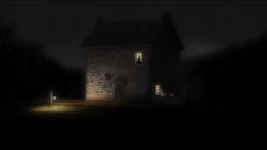
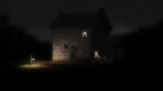

Know the locations! Here are the important locations you need to know! Unknown (Location) The Unknown serves as the main setting of the series, and is the titular location in "Into the Unknown", and "The Unknown". The Unknown is represented largely by expansive forest, through which Wirt and Greg travel through for several days. Edelwood trees are native to the Unknown. The Unknown is a surreal, ever-changing landscape between life and death, dreams and reality, inspired by American folklore, classic fairy tales, Victorian ghost stories, and logic-defying dreams. It features rural areas with undeveloped land, rivers, pastures, swamps, and thick forests, as well as civilizations such as Pottsfield, the Tavern, and the Schoolhouse. Dirt paths and cobblestone trails suggest frequent travel by its inhabitants. The Unknown also includes widespread wheat fields and swamp-lands, and features various houses such as Quincy Endicott and Margueritte Grey's mansions, Adelaide's cottage, Auntie Whispers' house, and the grist mill. Old Mill The Mill is a location that the Woodsman used to harvest grist from Edelwood to feed The Dark Lantern until it was destroyed by the Dog in The Old Grist Mill. The Mill has a housing area and mill, with a path leading to the front door and a waterfall behind the house. The Woodsman set up a hand-cranked machine to replace the destroyed mill, but it was never shown working. Beatrice and her family lived here before being turned into birds and moved back in after being turned back into humans. Eternal Garden Cemetery The Eternal Garden Cemetery is a cemetery that Sara, Jason Funderberker, Wirt, Gregory an several unnamed kids go to in Chapter 9 after the Halloween party. Over the wall in the back of the cemetery are train tracks and where Greg and Wirt go to escape the cops. A train comes down the tracks and forces Greg and Wirt to jump away from the train causing them to fall down a steep hill into a pond where they enter the unknown. School House This location is seen in Schooltown Follies and is where most of the chapter takes place. Ms. Langtree and the School Animals can be found in this location. The animals seem to live and eat at the schoolhouse while Ms. Langtree teaches them. The School House in the Unknown is a one-story building painted red with a white columned porch and a bell on top. The front room serves as the classroom with desks, a chalkboard, and a dunce box. The middle room is a dining area with a piano played by Ms. Langtree, while the back room serves as the sleeping quarters for students. The school is entirely funded by Mr. Langtree and holds sentimental value to him, as evidenced by his desperate attempt to save it by stealing the students' instruments.  Tavern The Tavern appears in the episode "Song of the Dark Lantern". The Tavern is run by the Tavern Keeper and has a large dog that sleeps in the front of the door. There also is a stable attached to it where Fred is found.Before Wirt and Greg enter the Tavern, the Highway man is seen in the window on the second floor. The Tavern is a basic grey stone brick building with two storys. The only windows seen from the front is the one on the second floor and the other that faces the stable. In the prologue, we are shown a few wooden toys of people in the Tavern, which appear to be The Highway Man, Tavern Keeper, Butcher, Baker, and two of the tavern musicians. They may have been made by The Toymaker.
Unknown (Location) The Unknown serves as the main setting of the series, and is the titular location in "Into the Unknown", and "The Unknown". The Unknown is represented largely by expansive forest, through which Wirt and Greg travel through for several days. Edelwood trees are native to the Unknown. The Unknown is a surreal, ever-changing landscape between life and death, dreams and reality, inspired by American folklore, classic fairy tales, Victorian ghost stories, and logic-defying dreams. It features rural areas with undeveloped land, rivers, pastures, swamps, and thick forests, as well as civilizations such as Pottsfield, the Tavern, and the Schoolhouse. Dirt paths and cobblestone trails suggest frequent travel by its inhabitants. The Unknown also includes widespread wheat fields and swamp-lands, and features various houses such as Quincy Endicott and Margueritte Grey's mansions, Adelaide's cottage, Auntie Whispers' house, and the grist mill. Old Mill The Mill is a location that the Woodsman used to harvest grist from Edelwood to feed The Dark Lantern until it was destroyed by the Dog in The Old Grist Mill. The Mill has a housing area and mill, with a path leading to the front door and a waterfall behind the house. The Woodsman set up a hand-cranked machine to replace the destroyed mill, but it was never shown working. Beatrice and her family lived here before being turned into birds and moved back in after being turned back into humans. Eternal Garden Cemetery The Eternal Garden Cemetery is a cemetery that Sara, Jason Funderberker, Wirt, Gregory an several unnamed kids go to in Chapter 9 after the Halloween party. Over the wall in the back of the cemetery are train tracks and where Greg and Wirt go to escape the cops. A train comes down the tracks and forces Greg and Wirt to jump away from the train causing them to fall down a steep hill into a pond where they enter the unknown. School House This location is seen in Schooltown Follies and is where most of the chapter takes place. Ms. Langtree and the School Animals can be found in this location. The animals seem to live and eat at the schoolhouse while Ms. Langtree teaches them. The School House in the Unknown is a one-story building painted red with a white columned porch and a bell on top. The front room serves as the classroom with desks, a chalkboard, and a dunce box. The middle room is a dining area with a piano played by Ms. Langtree, while the back room serves as the sleeping quarters for students. The school is entirely funded by Mr. Langtree and holds sentimental value to him, as evidenced by his desperate attempt to save it by stealing the students' instruments.  Tavern The Tavern appears in the episode "Song of the Dark Lantern". The Tavern is run by the Tavern Keeper and has a large dog that sleeps in the front of the door. There also is a stable attached to it where Fred is found.Before Wirt and Greg enter the Tavern, the Highway man is seen in the window on the second floor. The Tavern is a basic grey stone brick building with two storys. The only windows seen from the front is the one on the second floor and the other that faces the stable. In the prologue, we are shown a few wooden toys of people in the Tavern, which appear to be The Highway Man, Tavern Keeper, Butcher, Baker, and two of the tavern musicians. They may have been made by The Toymaker.